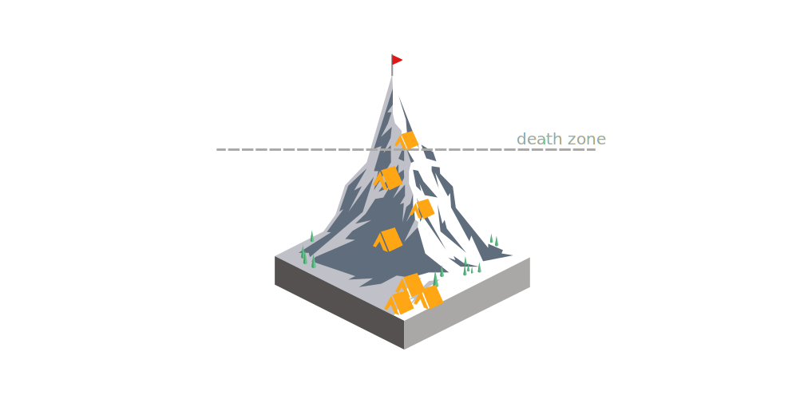

Everest Visualization

1) Choose a year
Use the scrollbar to choose a year.
Show all
2) Filter all people
You can toggle the buttons and choose multiple filters.
No subfilter
Only sherpas
Only men
Only women
Only Swiss
3) Filter reasons for death
Click on "any or no reason" to see all the summiters again.
Any or no reason
Avanlanche
Fall
Exposure
Altitude sickness
Exhaustion
Other
Fatalities
Summiters